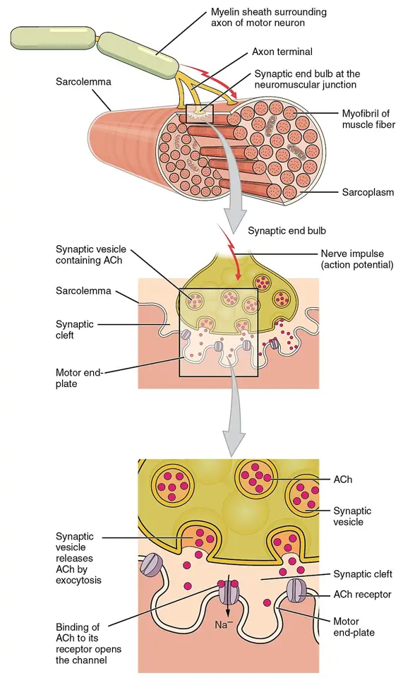
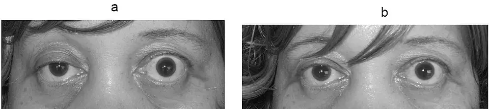
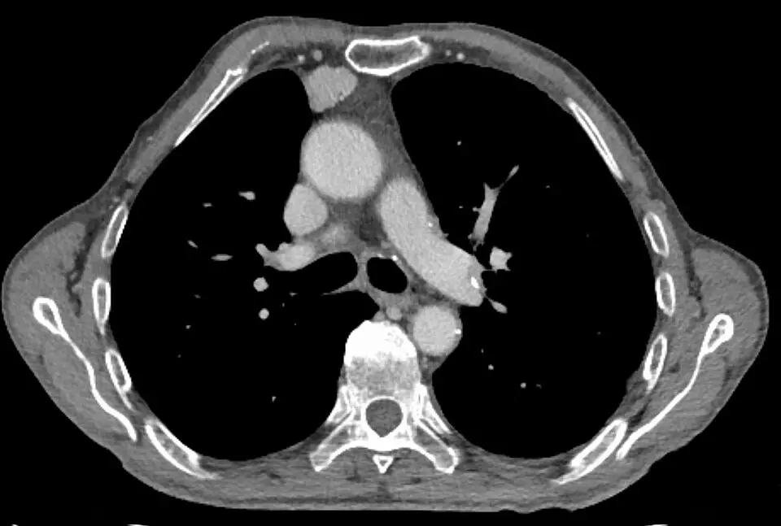

DX.9 — Myasthénie auto-immune
La myasthénie auto-immune provoque une faiblesse fluctuante qui s'aggrave à l'effort, car des anticorps détruisent la transmission entre le nerf et le muscleS2. Une dysphagie qui se fatigue au cours du repas, avec ptosis ou diplopie, l'évoque d'abordS4. Le médecin cherche ensuite les signes de crise, parce qu'une capacité respiratoire peut chuter en quelques heuresS2. Il confirme enfin le diagnostic par les anticorps, l'électrophysiologie et la tomodensitométrie du thorax, puis il traite selon le sous-type sérologiqueS1.
Phase A du LOT · diagnostics voisins : DX.1 dysphagie après AVC, DX.10 corps étranger des voies aériennes.
1. Définition
Le consensus nordique publié en 2024 par l'European Journal of Neurology définit la myasthénie comme une maladie auto-immune de la jonction neuromusculaireS2. Des anticorps dirigés contre des protéines fonctionnelles de la membrane postsynaptique y provoquent une faiblesse des muscles striésS2. Cette faiblesse fluctue dans le temps et augmente avec l'utilisation répétée ou prolongée du muscleS2. La recommandation allemande de 2023 classe ensuite chaque patient selon l'anticorps présent, l'âge, la pathologie du thymus et l'activité de la maladieS1.
2. Épidémiologie (Suisse, puis Europe)
Aucun registre suisse publié ne chiffre la myasthénie ; les données de population les plus solides viennent du registre national suédois, voisin par son système de soinsS3. La Suède comptait en 2016 une incidence de 2,9 cas pour 100 000 habitants et une prévalence brute de 36,1 pour 100 000S3. L'étude nordique de 2024 mesure une prévalence de 18,56 à 23,42 pour 100 000 habitants selon le pays (Danemark, Finlande, Suède)S11. La répartition par âge et par sexe montre surtout que la maladie touche aujourd'hui des sujets âgésS3. Le pronostic vital dépend avant tout de la crise myasthénique, qui frappe environ un patient sur dixS2.
Une maladie du sujet âgé autant que de la femme jeune
Les études européennes rapportent des incidences de 0,2 à 3 pour 100 000 et des prévalences de 1,5 à 24 pour 100 000, selon la méthode employéeS3. Le registre suédois a recensé 2 598 nouveaux cas entre 2006 et 2016, avec un âge moyen de 56,0 ans au diagnosticS3. Les formes à début tardif représentaient 69,4 % des nouveaux cas, et les hommes y dominaient légèrementS3.
| Sous-groupe suédois (2006–2016) | Part des nouveaux cas | Part de femmes | Source |
|---|---|---|---|
| Début précoce, de 18 à 49 ans, sans thymome | 22,6 % | 66,8 % | S3 |
| Début tardif, après 50 ans, sans thymome | 69,4 % | 44,7 % | S3 |
| Myasthénie associée à un thymome | 4,6 % | 52,2 % | S3 |
| Début juvénile, avant 18 ans | 3,3 % | 47,7 % | S3 |
La prévalence suédoise a augmenté entre 2006 et 2016 dans tous les sous-groupes, sauf la forme associée au thymomeS3. Le médecin suisse doit donc évoquer la myasthénie chez une personne âgée qui avale mal, même sans ptosis évidentS3S4.
Ce qui tue : la crise et ses complications
Une crise myasthénique survient chez environ 10 % des patients atteints de forme généralisée, surtout pendant les deux premières annéesS2. Sa mortalité atteint 5 à 10 % selon le consensus nordiqueS2. Dans une série allemande de 250 crises ventilées, l'âge médian atteignait 72 ans et la mortalité hospitalière 12 %S5. La défaillance multiviscérale, surtout septique, causait la plupart de ces décèsS5.
Parmi 815 patients allemands suivis, la sévérité au diagnostic, le thymome et les anticorps anti-MuSK prédisaient la crise de façon indépendanteS6. Entre 10 et 20 % des patients restent modérément ou sévèrement faibles malgré deux immunosuppresseurs à forte doseS2.
3. Physiopathologie
Base à connaître : la jonction neuromusculaire et la marge de sécurité
Chaque potentiel d'action du nerf libère de l'acétylcholine, qui se fixe sur les récepteurs postsynaptiques et dépolarise la plaque motrice jusqu'au seuil de la fibre musculaire. La transmission normale dispose d'une marge de sécurité, que les anticorps anti-récepteurs abolissent dans la myasthénieS8. La base anatomo-fonctionnelle explique ainsi les trois signes cardinaux : faiblesse fatigable, prédominance oculaire et bulbaire, amélioration par les anticholinestérasiquesS8S4.
Base à connaître : la plaque motrice, du nerf au muscle
Le motoneurone libère l'acétylcholine dans la fente synaptique, puis la cholinestérase la dégrade en quelques millisecondes ; la stimulation suivante doit donc renouveler l'effet. Lorsque les récepteurs manquent, les premières décharges passent encore, puis les suivantes échouent ; la stimulation répétitive le traduit par un décrémentS8S1. Le pharynx et la langue répètent leur contraction à chaque bouchée, ce qui explique la dysphagie qui s'installe au fil du repasS4.
Plaque motrice : du nerf au récepteur. Ce schéma publié en couleur par OpenStax montre la jonction neuromusculaire en trois agrandissements successifs, du muscle entier au récepteur.

Lisez d'abord seul ce cliché (plaque motrice : du nerf au récepteur) : cherchez vous-même le signe.
La copie annotée (plaque motrice : du nerf au récepteur) porte des repères numérotés, que la lecture guidée décrit ensuite.
- La terminaison axonale du motoneurone apporte le potentiel d’action jusqu’à la fibre musculaire.
- Les vésicules synaptiques contiennent l’acétylcholine, que chaque décharge nerveuse libère dans la fente.
- La fente synaptique contient la cholinestérase, que la pyridostigmine inhibe pour prolonger l’action de l’acétylcholine.
- Les récepteurs de l’acétylcholine garnissent les replis de la plaque motrice ; les anticorps anti-RACh les détruisent dans la myasthénie.
- Le schéma montre une jonction normale ; il ne représente ni les anticorps ni le complément qui détruisent les récepteurs.
- Les replis paraissent nombreux sur le dessin, mais leur perte progressive explique la faiblesse qui apparaît à l’effort.
Ce que l'image décide. Une faiblesse qui s’aggrave à l’effort et s’améliore avec un anticholinestérasique situe la panne sur ces récepteurs postsynaptiques.

La pyridostigmine inhibe la cholinestérase, ce qui prolonge la présence de l'acétylcholine dans la fente et restaure partiellement la transmissionAIPS. Elle ne corrige pourtant pas la cause, puisque les anticorps continuent de détruire les récepteursS8S1.
Trois anticorps, trois mécanismes
Les anticorps anti-récepteur de l'acétylcholine (RACh) appartiennent à des sous-classes qui fixent le complément ; ils détruisent la membrane postsynaptique par le complexe d'attaque membranaireS1. Les anticorps anti-tyrosine kinase spécifique du muscle (MuSK) sont surtout des IgG4, qui ne fixent pas le complément ; les inhibiteurs de C5 n'y trouvent donc aucune cibleS1. Les anticorps anti-protéine 4 apparentée au récepteur des lipoprotéines (LRP4) et la forme séronégative se traitent généralement comme la forme à anticorps anti-RAChS1.
Le thymus, organe d'amorçage
Un thymome est présent chez 10 % des patients porteurs d'anticorps anti-RAChS2. Une hyperplasie thymique avec centres germinatifs ectopiques se retrouve chez la plupart des patients dont la maladie débute avant 50 ansS2. Le thymus entretient ainsi la production d'anticorps, ce qui justifie la thymectomie dans des fenêtres d'âge précisesS1S2.
Du mécanisme au traitement
Le tableau de corrélation relie chaque perturbation à l'examen qui la montre et au traitement qui la corrige. Il explique aussi l'ordre des examens et des traitements qui suivent.
Perturbation, exploration, thérapeutique
| Perturbation | Exploration qui la montre | Thérapeutique qui la corrige |
|---|---|---|
| Perte de récepteurs par le complément (anti-RACh) | Anticorps anti-RACh, décrément à la stimulation répétitive | Inhibiteur de C5 : éculizumab, ravulizumabS1 |
| Anticorps IgG pathogènes en circulation | Sérologie, aggravation clinique | Échanges plasmatiques, immunoadsorption, immunoglobulines, bloqueur du FcRnS1S2 |
| Activation lymphocytaire chronique | Évolution clinique, scores MG-ADL et QMG | Corticoïde, azathioprine, rituximabS1 |
| Thymome ou hyperplasie thymique | Tomodensitométrie ou IRM du thorax | ThymectomieS1S2 |
| Défaut d'acétylcholine efficace dans la fente | Amélioration après anticholinestérasique | PyridostigmineAIPS |
Le récepteur Fc néonatal (FcRn) recycle les IgG ; son blocage par un anticorps réduit les IgG circulantes de 60 à 70 %S2. L'éculizumab se lie à la protéine C5 du complément et empêche la formation du complexe terminalAIPS.
4. Démarche diagnostique
Le médecin écarte d'abord ce qui tue en heures : la crise myasthénique avec défaillance respiratoire ou bulbaire, puis la crise cholinergique par surdosage de pyridostigmineS2AIPS. Il cherche ensuite les diagnostics discriminants qui imitent une dysphagie fatigable, dont l'accident vasculaire du tronc cérébral traité au DX.1.
🚩 Crise myasthénique : la menace vitale
La crise myasthénique est une exacerbation où la faiblesse ventilatoire ou bulbaire menace la vie et impose une ventilation non invasive ou une intubationS2. La capacité respiratoire peut chuter rapidement ; la capacité vitale et les gaz du sang ne prédisent pas fiablement le besoin de ventilationS2. Tout signe débutant de crise impose donc l'admission immédiate en soins intensifs, sans attendre une valeur seuilS2.
Crise cholinergique : l'autre faiblesse qui s'aggrave
L'AIPS de la pyridostigmine distingue la crise cholinergique par surdosage de la crise myasthénique par aggravation de la maladieAIPS. Les deux crises se manifestent par une faiblesse accrue ; on renforce l'anticholinestérasique dans la seconde, mais on l'arrête immédiatement dans la premièreAIPS. Une dose quotidienne de 450 à 600 mg ou davantage peut provoquer une crise cholinergique selon le consensus nordique, hors AIPSS2. La salivation, le larmoiement, la bradycardie et les fasciculations orientent alors vers l'excès d'acétylcholineAIPS.
Diagnostics discriminants, des graves aux fréquents
| Diagnostic | Élément qui tranche | Piège | Conduite si positif |
|---|---|---|---|
| 🚩 Crise myasthénique | Faiblesse ventilatoire ou bulbaire évolutive | Gaz du sang encore normaux | Soins intensifs, échanges plasmatiques ou immunoglobulinesS2 |
| 🚩 Crise cholinergique | Signes muscariniques, doses élevées de pyridostigmine | Faiblesse identique à la crise myasthénique | Arrêt de la pyridostigmine, soutien respiratoireAIPS |
| AVC du tronc cérébral (DX.1) | Début brutal, signes déficitaires fixes | Dysarthrie et ptosis possibles | Filière AVC et imagerie (voir DX.1) |
| Syndrome de Lambert-Eaton | Faiblesse proximale, aréflexie, bouche sèche, incrément | Atteinte oculaire et bulbaire rare | Anticorps anti-canaux calciques, recherche de cancerS1 |
| Syndrome myasthénique congénital | Début dans l'enfance, séronégativité | Diagnostic tardif possible chez l'adulte | Génétique en centre spécialiséS1 |
Le syndrome de Lambert-Eaton touche des anticorps contre les canaux calciques présynaptiques, détectés chez environ 85 % des patientsS1. Sa forme paranéoplasique accompagne surtout le cancer bronchique à petites cellules du fumeur, ce qui impose une recherche tumoraleS1. Les syndromes congénitaux se manifestent souvent avant 2 ans, mais des formes tardives sont prises à tort pour une myasthénie séronégativeS1.
Lorsqu'une dysphagie pharyngée reste inexpliquée, la myasthénie doit être cherchée activement, car un retard diagnostique expose à une crise mortelleS4.
5. Anamnèse ciblée et drapeaux rouges
L'anamnèse cherche la fatigabilité, c'est-à-dire un symptôme absent au repos qui apparaît ou s'aggrave avec la répétition du gesteS2. Elle reconstitue la chronologie, puis elle recherche les déclencheurs et les médicaments qui aggravent la transmissionS1S2. Les drapeaux rouges décident du lieu de prise en charge avant toute discussion diagnostique.
La dysphagie myasthénique, décrite point par point
Le siège est oropharyngé : le patient bloque à la mise en route de la déglutition, avec toux, fausses routes ou reflux de liquide par le nezS4. Le type est fatigable : les premières bouchées passent, puis la mastication et la déglutition s'épuisent au cours du repasS4. L'horaire est typique quand les symptômes s'aggravent en fin de journée et s'améliorent après le reposS2. Les signes associés sont la ptosis, la diplopie, la voix nasonnée, la mastication fatigable et la faiblesse cervicaleS4S2.
La dysphagie est atypique pour une myasthénie lorsqu'elle bloque les solides derrière le sternum ou qu'elle progresse sans jamais fluctuer. Elle oriente alors vers une cause œsophagienne, traitée dans les autres diagnostics du LOT.
| Caractère | Myasthénie | Pourquoi |
|---|---|---|
| Fluctuation dans la journée | Typique | La transmission s'épuise avec l'activité répétéeS2 |
| Ptosis ou diplopie associée | Typique | Les muscles oculaires sont souvent touchés en premierS2 |
| Blocage rétrosternal des solides | Atypique | La maladie touche la jonction des muscles striés, pas l'obstacle œsophagienS2 |
| Douleur à la déglutition | Atypique | La jonction neuromusculaire ne provoque pas de douleur |
Chronologie et terrain
Un quart environ des patients se présente avec une faiblesse bulbaire prédominante, et jusqu'à 67 % développent une dysphagie pendant l'évolutionS4. Le médecin précise la date d'apparition, le rythme des aggravations et les épisodes antérieurs de diplopie passés inaperçusS4. Il recherche aussi une perte de poids, des pneumonies d'aspiration et une dyspnée couchée, qui signent un retentissement avancéS2.
Ce qui déclenche une aggravation
Les infections déclenchent les crises de mauvais pronostic, ce qui justifie leur recherche systématique à l'anamnèseS6. Les quinolones peuvent aggraver la myasthénie selon la recommandation allemandeS1. Le magnésium doit être évité dans la prééclampsie et l'éclampsie d'une patiente myasthéniqueS2. L'AIPS de la prednisone signale qu'un corticoïde associé aux anticholinestérasiques augmente le risque de crise myasthéniqueAIPS.
L'arrêt brutal d'une immunothérapie chez un patient mal stabilisé peut aussi déclencher une criseS1. Le médecin vérifie donc l'observance et toute modification récente du traitement.
Drapeaux rouges et action immédiate
| Drapeau rouge | Signification | Action immédiate |
|---|---|---|
| Dyspnée, orthopnée, toux faible | Faiblesse des muscles respiratoires | Soins intensifs sans délaiS2 |
| Fausses routes répétées, salive non avalée | Atteinte bulbaire sévère, risque d'aspiration | Arrêt de l'alimentation orale, admissionS2 |
| Voix éteinte, faiblesse de la nuque | Aggravation bulbaire et axiale | Mesures respiratoires répétées, surveillance continueS2 |
| Fièvre ou infection récente | Déclencheur de crise | Recherche et traitement de l'infectionS6 |
| Salivation, bradycardie, crampes | Surdosage cholinergique | Arrêt de la pyridostigmine, atropine si nécessaireAIPS |
6. Examen physique ciblé, région par région
L'examen procède dans l'ordre où l'on observe le patient : yeux et paupières, face et voix, bouche et pharynx, nuque et membres, puis fonction respiratoireS2S7. Chaque manœuvre provoque la fatigue, car un muscle reposé peut paraître normalS2.
Yeux et paupières : la ptosis fatigable
Le normal montre une paupière supérieure qui découvre la pupille et reste stable pendant le regard vers le haut. Le médecin demande au patient de fixer vers le haut pendant une minute, puis il observe la descente progressive de la paupièreS7. Le test du glaçon applique du froid sur la paupière ; l'amélioration de la ptosis est positive avec une sensibilité de 86 % et une spécificité de 79 %S7.
Ptosis myasthénique réversible. Cette photographie clinique publiée dans un rapport de cas montre le regard de face avant (a) et après (b) un test pharmacologique.

Lisez d'abord seul ce cliché (ptosis myasthénique réversible) : cherchez vous-même le signe.
La copie annotée (ptosis myasthénique réversible) porte des repères numérotés, que la lecture guidée décrit ensuite.
- Sur le panneau a, la paupière supérieure droite recouvre la moitié haute de la pupille, alors que la gauche reste bien ouverte.
- La paupière gauche du panneau a se rétracte par compensation, selon la loi de Hering que cite la légende Wikimedia du fichier, ce qui accentue l’asymétrie.
- Sur le panneau b, la paupière droite découvre de nouveau la pupille après le test, ce qui prouve une ptosis réversible.
- Une ptosis avec pupille dilatée relève d’une atteinte du nerf oculomoteur et non d’une myasthénie.
- Une image fixe ne montre pas la fatigabilité ; le médecin doit la provoquer par le regard soutenu vers le haut.
Ce que l'image décide. Une ptosis asymétrique qui s’améliore après le froid ou un anticholinestérasique impose la sérologie anti-RACh et l’imagerie du thorax.

Une ptosis qui varie au cours de l'examen, associée à une diplopie changeante, oriente vers la myasthénie, car la faiblesse fluctueS2. Une pupille dilatée avec ptosis oriente au contraire vers une atteinte du nerf oculomoteur, qui relève d'une imagerie urgente.
Face et voix
Le médecin fait compter le patient à voix haute jusqu'à ce que la voix devienne nasonnée ou s'éteigne, car le voile s'épuiseS4. Il recherche une faiblesse de l'orbiculaire des yeux en tentant d'ouvrir les paupières fermées avec force. Il observe enfin la mastication prolongée, qui se fatigue chez les patients bulbairesS4.
Bouche et pharynx : l'épreuve de déglutition répétée
L'épreuve de déglutition fatigable consiste à donner des gorgées successives et à chercher une toux, une voix mouillée ou un reflux nasal au fil des prisesS4. Dans la cohorte de Münster, ce test avait une sensibilité de 74,5 % et une spécificité de 73,5 % seulementS4. Le médecin ne conclut donc jamais sur cette seule épreuve ; il demande une endoscopie de déglutition si le doute persisteS4.
Fonction respiratoire : ne pas attendre les chiffres
Le médecin recherche une respiration paradoxale, une toux inefficace et une incapacité à compter longtemps d'un seul souffle. La capacité vitale et les gaz du sang ne prédisent pas fiablement le besoin de ventilation ; la clinique répétée prime doncS2. Dans la cohorte allemande, une capacité vitale basse avant la crise annonçait cependant une évolution plus défavorableS6.
7. Approche syndromique
La myasthénie se décompose en quatre syndromes : syndrome oculaire, syndrome bulbaire, syndrome généralisé et syndrome respiratoireS2. Le tableau de synthèse précise, pour chacun, les signes fonctionnels et les signes physiques.
| Syndrome | Signes fonctionnels | Signes physiques |
|---|---|---|
| 7.1 Oculaire | Vision double, paupière qui tombe le soir | Ptosis fatigable, diplopie variable |
| 7.2 Bulbaire | Fausses routes, voix nasonnée, mastication épuisée | Voix qui s'éteint au comptage, reflux nasal |
| 7.3 Généralisé | Fatigue des bras levés, chutes de la tête | Faiblesse cervicale et proximale fatigable |
| 7.4 Respiratoire | Dyspnée, orthopnée, toux faible | Respiration paradoxale, comptage court |
7.1 Syndrome oculaire
La myasthénie oculaire touche seulement les muscles oculomoteurs et le releveur de la paupièreS1. Des études rétrospectives suggèrent qu'une immunothérapie réduit sa progression vers la forme généraliséeS1. Chez l'enfant prépubère, la forme oculaire isolée concerne 26 à 38 % des casS1.
7.2 Syndrome bulbaire, celui du LOT
Le syndrome bulbaire associe la dysphagie, la dysarthrie et la faiblesse masticatoire, parce que les muscles du voile, du pharynx et de la langue s'épuisent pendant le repasS4. L'endoscopie montre une fuite prématurée du bolus, des résidus dans les vallécules et les sinus piriformes, puis des pénétrations ou des aspirationsS4. Ces anomalies s'améliorent nettement après l'injection d'un anticholinestérasique, ce qui prouve leur origine synaptiqueS4.
7.3 Syndrome généralisé
La forme généralisée touche les muscles des membres, du tronc, de la nuque et parfois de la respirationS2. La plupart des patients ont une faiblesse généralisée qui touche aussi les muscles oculaires et bulbairesS2. La faiblesse augmente avec l'usage répété du muscle, ce qui explique les chutes de la tête en fin de journéeS2.
7.4 Syndrome respiratoire
La faiblesse du diaphragme et des muscles expiratoires réduit la toux, ce qui laisse les sécrétions encombrer les voies aériennes. L'association d'une atteinte bulbaire et respiratoire définit la crise lorsqu'elle impose une ventilationS2. Dans la série allemande, une ventilation non invasive a suffi dans 38 % des 92 cas où elle a été tentéeS5.
8. Diagnostic positif et critères
Aucun score unique ne pose le diagnostic ; il repose sur une faiblesse fatigable compatible confirmée par un anticorps spécifique ou par l'électrophysiologieS4S1. Le classement de sévérité oriente ensuite le traitement, en distinguant la maladie légère à modérée de la maladie très activeS1.
Ce qui suffit et ce qui ne suffit pas
Dans la cohorte de Münster, le diagnostic reposait sur des anticorps anti-RACh ou anti-MuSK ; chez les patients séronégatifs, il exigeait un décrément ou une réponse caractéristique au traitementS4. Un anticorps positif confirme pratiquement le diagnostic, grâce à sa valeur prédictive positive élevéeS4. Un anticorps négatif ne l'exclut pas, puisque jusqu'à 15 % des patients restent séronégatifsS4.
| Élément | Suffit-il ? | Raison |
|---|---|---|
| Anticorps anti-RACh avec clinique compatible | Oui | Valeur prédictive positive très élevéeS4 |
| Anticorps anti-MuSK avec clinique compatible | Oui | Sous-type défini, sans indication de thymectomieS1 |
| Fatigabilité clinique seule | Non | Spécificité insuffisante de l'épreuve de déglutitionS4 |
| Décrément isolé chez un séronégatif | Avec clinique compatible | Le Lambert-Eaton donne aussi un décrémentS1 |
| Réponse au glaçon ou à l'anticholinestérasique | Non, seule | Elle oriente sans exclure d'autres causesS7S4 |
Classer la sévérité pour décider
La recommandation allemande évalue la sévérité selon la classification de la Myasthenia Gravis Foundation of America (MGFA), relevée au moment de l'examenS1. Elle définit une maladie très active par une classe au moins IIb ou par au moins deux crises nécessitant échanges plasmatiques ou immunoglobulines dans l'année suivant le diagnosticS1. Elle suit l'évolution par des scores répétés, comme le score quantitatif QMG et l'échelle d'activités quotidiennes MG-ADLS1.
L'AIPS de l'éculizumab rapporte un essai où les patients avaient une classe MGFA II à IV et un score MG-ADL total d'au moins 6AIPS.
9. Examens complémentaires
L'examen de référence n'est pas unique : la sérologie confirme la plupart des cas, l'électrophysiologie confirme les séronégatifs, et l'endoscopie objective la dysphagieS4S1. Le médecin prescrit d'abord les anticorps, puis la stimulation répétitive ou l'électromyographie de fibre unique, et toujours l'imagerie du thoraxS1S2. La vidéo-endoscopie de déglutition répond à la question du LOT : le pharynx est-il faible, et cette faiblesse est-elle réversibleS4 ?
9.a et 9.b — Sérologie, examen de première intention
La sérologie est indiquée devant toute faiblesse fatigable oculaire, bulbaire ou généralisée. Le médecin prescrit les anticorps anti-RACh, puis anti-MuSK s'ils sont négatifsS1. Dans la cohorte de dysphagie de Münster, la sérologie avait une sensibilité de 94,1 % et une spécificité de 100 %S4.
| Résultat | Signification | Conduite |
|---|---|---|
| Anti-RACh positif | Myasthénie à anticorps anti-RACh | Imagerie du thymus, traitement selon l'activitéS1 |
| Anti-MuSK positif | Sous-type IgG4, crises plus fréquentes | Pas de thymectomie ; rituximab si maladie activeS1S6 |
| Anti-LRP4 positif | Sous-type rare | Traitement comme la forme anti-RAChS1 |
| Séronégatif | Anticorps absents ou de faible affinité | Électrophysiologie, avis spécialiséS2S4 |
Le piège tient à ce qu'une immunosuppression déjà en cours ou un dosage trop précoce peut fausser la sérologie et rendre le patient faussement séronégatifS4.
9.b — Stimulation nerveuse répétitive
La stimulation répétitive est indiquée chez le patient séronégatif ou en cas de doute clinique. Elle est réalisée à basse fréquence, avec un enregistrement sur un muscle cliniquement atteintS4. La recommandation allemande retient un décrément pathologique dès 10 % à une fréquence de 2 à 3 HzS1.
Le piège tient à sa faible sensibilité : dans la cohorte de Münster, la stimulation n'était positive que chez 51,0 % des patients bulbairesS4. Sur le muscle nasal, sa sensibilité peut même tomber à 46 %S4. Un décrément suivi d'un incrément supérieur à 60 % après effort oriente vers un Lambert-EatonS1.
9.d — Électromyographie de fibre unique
L'électromyographie de fibre unique est indiquée devant une ptosis ou une faiblesse séronégative lorsque la stimulation répétitive reste normale. Elle est réalisée en centre spécialisé, par stimulation de l'orbiculaire de l'œilS7. À Bologne, elle atteignait une sensibilité de 94 % pour une spécificité de 79 % chez 155 patients adressés pour ptosisS7.
Le piège consiste à surinterpréter un résultat négatif. La négativité simultanée du glaçon et de la fibre unique avait une valeur prédictive négative de 94 %S7. Elle rend donc la myasthénie oculaire improbable, sans l'exclureS7.
9.b — Tomodensitométrie ou IRM du thorax, toujours
L'imagerie est indiquée chez tout patient myasthénique au moment du diagnostic. Le médecin prescrit une tomodensitométrie ou une IRM du thorax, centrée sur le médiastin antérieurS1S2. Une masse du médiastin antérieur évoque un thymome, qui impose une exérèse chirurgicale quel que soit l'âgeS1.
Thymome à la tomodensitométrie. Cette tomodensitométrie thoracique axiale est injectée et lue en fenêtre médiastinale, au niveau du tronc pulmonaire, sous la crosse aortique.

Lisez d'abord seul ce cliché (thymome à la tomodensitométrie) : cherchez vous-même le signe.
La copie annotée (thymome à la tomodensitométrie) porte des repères numérotés, que la lecture guidée décrit ensuite.
- Une masse tissulaire arrondie occupe le médiastin antérieur, juste en arrière du sternum : elle correspond au thymome.
- L’aorte ascendante, très rehaussée, sert de repère : la masse thymique se situe en avant d’elle.
- La trachée et les bronches souches, noires, restent libres, car le thymome ne les comprime pas ici.
- Chez le sujet jeune, un thymus normal ou hyperplasique peut imiter une masse ; la forme triangulaire plaide pour le thymus normal.
- L’imagerie détecte mal l’hyperplasie thymique, qui ne se distingue souvent pas d’un thymus normal.
Ce que l'image décide. Toute masse du médiastin antérieur chez un patient myasthénique impose une exérèse chirurgicale après stabilisation de la myasthénie.

Le piège vient de ce que l'imagerie détecte mal l'hyperplasie thymique ; une imagerie normale n'exclut donc pas l'intérêt d'une thymectomieS2.
9.c — Endoscopie de déglutition avec anticholinestérasique
L'endoscopie est indiquée devant une dysphagie pharyngée isolée ou prédominante, sans cause évidente. Le médecin prescrit une endoscopie flexible de la déglutition avec purée, solide et liquide, avant et après injection intraveineuse d'un anticholinestérasiqueS4. Le protocole de Münster injectait d'abord un placebo salé, puis l'édrophonium jusqu'à une dose cumulée de 10 mg, hors AIPSS4.
Le test est positif si la fuite prématurée, les résidus ou les aspirations s'améliorent nettement après l'injectionS4. Chez 100 patients atteints de dysphagie inexpliquée, il atteignait une sensibilité de 88,2 % et une spécificité de 95,9 %S4. Il ne provoquait aucune complication notable, hormis des effets muscariniques transitoires comme une bradycardieS4.
Comme alternative, chez la femme enceinte ou l'enfant, l'endoscopie reste réalisable, tandis que l'IRM, admise au même titre que la tomodensitométrie, évite l'irradiation du thoraxS1.
9.d — Bilan avant traitement immunosuppresseur
Avant l'azathioprine, l'AIPS impose une surveillance hebdomadaire de la formule sanguine pendant 8 semaines, puis au moins tous les 3 moisAIPS. Elle propose aussi d'envisager le génotypage du gène NUDT15 avant le traitement, car ses variants exposent à une toxicité sévèreAIPS. Avant un inhibiteur du complément, la vaccination antiméningococcique doit précéder la première perfusion d'au moins 2 semainesAIPS.
Le bilan avant traitement complète ces examens dès que l'immunosuppression est envisagée.
10. Arbre décisionnel
L'arbre commence par la dysphagie fatigable, puis il place toujours la menace respiratoire en premier.
- Une dyspnée, une toux faible ou des fausses routes répétées imposent les soins intensifs, puis les échanges plasmatiques ou les immunoglobulinesS2.
- Des signes muscariniques sous fortes doses de pyridostigmine imposent l'arrêt du médicament et un soutien respiratoireAIPS.
- Une ptosis ou une diplopie fatigable sans détresse oriente vers les anticorps anti-RACh, puis anti-MuSK s'ils sont négatifsS1.
- Un anticorps positif impose la tomodensitométrie du thorax, puis un traitement adapté à l'activitéS1.
- Un anticorps négatif conduit à la stimulation répétitive, à la fibre unique et à l'endoscopie avec anticholinestérasiqueS4S7.
- Une dysphagie pharyngée isolée et inexpliquée justifie l'endoscopie de déglutition avec anticholinestérasique, puis la sérologieS4.
- Une faiblesse proximale avec aréflexie et bouche sèche oriente vers les anticorps anti-canaux calciques et un cancer bronchiqueS1.
11. Prise en charge selon les recommandations suisses
11.A But chiffré
La recommandation allemande vise le contrôle complet de la maladie, sans activité et sans symptôme résiduel, avec préservation de la qualité de vieS1. Elle accepte en second rang un contrôle complet avec des symptômes résiduels minimes et stablesS1. Au long cours, la dose de corticoïde doit rester sous le seuil de Cushing de 7,5 mg de prednisolone par jour, hors AIPSS1.
11.B Moyens
La conduite d'urgence prime sur tout le reste lorsque la déglutition ou la respiration s'effondre. Hors urgence, le traitement suit un ordre : pyridostigmine, corticoïde, immunosuppresseur, thymectomie, puis biothérapie pour les formes très activesS1S2. Le tableau des médicaments conduit ensuite à une fiche par molécule.
Urgence — conduite chronologique de la crise myasthénique
- Minute 0 : on assoit le patient, on aspire les sécrétions, on donne l'oxygène et on appelle le 144 hors hôpital ; on suspend toute alimentation oraleS2S10.
- Premières minutes : le médecin surveille sans cesse la toux, le comptage et la respiration, sans attendre un seuil gazométriqueS2.
- Première heure : le patient est admis dans des soins intensifs expérimentés en maladies neuromusculairesS1S2.
- Si ventilation nécessaire : essai de ventilation non invasive, puis intubation si elle échoueS5S2.
- Pendant la ventilation : arrêt de la pyridostigmine pour limiter les sécrétions, reprise avant le sevrageS2.
- Rapidement : l'équipe débute les échanges plasmatiques ou les immunoglobulines selon les contre-indications et la disponibilitéS1S2.
- Après une semaine sans réponse : corticoïde à forte dose en complément, selon le consensus nordiqueS2.
- Toujours : l'équipe recherche et traite l'infection déclenchante, puis elle prévient les complicationsS6S5.
Les immunoglobulines et les échanges plasmatiques ont une efficacité comparable dans les exacerbationsS1. Une étude de 84 patients a montré une baisse du score QMG de 69 % sous immunoglobulines et de 65 % sous échangesS1. Les échanges sont contre-indiqués dans le sepsis, et les immunoglobulines dans l'hypercoagulabilité et l'insuffisance rénaleS1. Si une crise longue s'annonce, la combinaison séquentielle donne les échanges d'abord, pour ne pas éliminer les immunoglobulinesS2.
Dans la série allemande, les échanges ou l'immunoadsorption en première ligne réduisaient le recours à la ventilation invasiveS5. Après la crise, l'immunothérapie de fond doit être intensifiéeS2.
Médicaments de la myasthénie : synthèse
| Molécule ® | Dose | Voie et durée | Contre-indication majeure | Fiche |
|---|---|---|---|---|
| Pyridostigmine, Mestinon® | 1 à 3 dragées de 60 mg, 2 à 4 fois par jourAIPS | Orale, au long cours | Obstruction mécanique digestive ou urinaireAIPS | Fiche |
| Prednisone, Prednisone Streuli® | 0,75 à 1,00 mg/kg dans les formes modérées à sévères, hors AIPSS2 | Orale, décroissance sur des mois | Hypersensibilité ; au long cours, ulcère, ostéoporose sévère, diabète de type 2AIPS | Fiche |
| Azathioprine, Imurek® | 1 à 3 mg/kg par jourAIPS | Orale, effet après des mois | Hypersensibilité, déficit en TPMT à surveillerAIPS | Fiche |
| Immunoglobulines, Privigen® | 2 g/kg sur 3 à 5 jours, hors AIPSS2 | Intraveineuse, cure courte | Anticorps anti-IgA, hyperprolinémieAIPS | Fiche |
| Efgartigimod alfa, Vyvgart® | 10 mg/kg par perfusion hebdomadaire, 4 semainesAIPS | Intraveineuse, par cycles | HypersensibilitéAIPS | Fiche |
| Éculizumab, Soliris® | 900 mg par semaine, puis 1200 mg toutes les 2 semainesAIPS | Intraveineuse, au long cours | Absence de vaccination antiméningococciqueAIPS | Fiche |
Ordre du traitement de fond
La pyridostigmine soulage tous les patients au début, mais elle ne modifie pas l'évolutionS1S2. Plus de 80 % des patients ont besoin d'une immunothérapie, car ils n'atteignent pas leur objectif sous traitement symptomatique seulS2. Le corticoïde et l'azathioprine constituent le premier choix des formes légères à modérées à anticorps anti-RACh, anti-LRP4 ou séronégativesS1.
La recommandation allemande propose une thymectomie entre 18 et 65 ans, idéalement dans les 2 ans et au plus tard 5 ans après le diagnosticS1. Le consensus nordique la réalise dans les 4 mois chez le patient de moins de 50 ans, stable, sans thymomeS2. La forme à anticorps anti-MuSK ne relève jamais de la thymectomieS1.
Dans les formes très actives à anticorps anti-RACh, la recommandation allemande ajoute un inhibiteur du complément ou un modulateur du FcRnS1. Dans la forme anti-MuSK très active, elle choisit le rituximab, car les inhibiteurs de C5 n'y trouvent aucune cibleS1.
Situations spéciales
Grossesse : l'AIPS réserve la pyridostigmine aux indications strictes, après évaluation du rapport utilité/risque, et fait examiner le nouveau-néAIPS. La prednisone sous 20 mg par jour et l'azathioprine peuvent être poursuivies selon le consensus nordique, hors AIPSS2. Le mycophénolate et le méthotrexate sont proscrits chez la femme en âge de procréerS2. L'accouchement a lieu dans une maternité disposant de soins intensifs néonatals, par voie basse sauf indication obstétricaleS2.
Enfant : le consensus nordique commence la pyridostigmine à 1 mg/kg par jour et vise souvent 7 mg/kg par jour, hors AIPSS2. La recommandation allemande limite la dose quotidienne pédiatrique à 450 mg, hors AIPSS1. Chez l'enfant prépubère, des rémissions spontanées sont possibles et doivent être attendues avant d'escaladerS1.
Sujet âgé et insuffisant rénal : la pyridostigmine s'élimine surtout par le rein sous forme inchangée, ce qui impose de réduire la dose en cas d'insuffisance rénaleAIPS. Les patients ostéoporotiques, obèses ou diabétiques supportent mal les corticoïdes ; ceux-ci restent brefs et faibles chez euxS2.
Non pharmacologique et social
L'orthophoniste adapte les textures et la posture lorsque l'endoscopie montre des aspirations, en attendant l'effet du traitementS4. Un entraînement physique régulier est recommandé, mais l'effort intense est évité pendant une crise ou en cas de risque de criseS2. La réadaptation coordonne le dialogue avec l'employeur, les assurances et les services sociaux, car la maladie réduit souvent la capacité de travailS2.
11.C Surveillance
Le neurologue mesure régulièrement les scores QMG et MG-ADL, en tenant compte de l'autoévaluation du patientS1. Sous corticoïde, il surveille la tension, le poids, la densité osseuse, la glycémie, le sommeil et l'humeurS2. Sous efgartigimod, il surveille le patient pendant la perfusion et dans l'heure qui suit, à cause des réactions d'hypersensibilitéAIPS.
11.D Pronostic, guérison et sortie
Beaucoup de patients évoluent bien, avec des symptômes minimes ou une rémissionS2. Une thymectomie réduit la dose d'immunothérapie nécessaire avec le temps, ce qui augmente la chance de l'arrêterS1. Dans la série allemande des crises, 20,5 % des survivants restaient ventilés à leur sortie de l'hôpitalS5.
Le patient quitte l'hôpital après une crise lorsque les critères suivants sont réunis.
- Il respire sans assistance ou avec une ventilation à domicile organiséeS5.
- Il avale sans aspiration à l'endoscopie, ou il dispose d'une alimentation sûre adaptéeS4.
- Son traitement de fond est intensifié et son suivi neurologique est fixéS2.
- Il connaît les médicaments à éviter et les signes qui imposent un retour immédiatS1S2.
Pyridostigmine — Mestinon® dragées et Mestinon retard® (n° 19943, 19945)AIPS
| Indication | Myasthénie grave, en dragées de 60 mg et en comprimés retard de 180 mgAIPS |
|---|---|
| Classe et mécanisme | Inhibiteur de la cholinestérase ; il prolonge l'action de l'acétylcholine à la jonctionAIPS |
| Dose AIPS | Dragées : 1 à 3 dragées 2 à 4 fois par jour ; retard : 1 à 3 comprimés deux fois par jourAIPS |
| Délai et durée | Plein effet en 15 à 30 minutes ; action de 2 à 4 heures, ou de 6 à 8 heures pour la forme retardAIPS |
| Contre-indications | Hypersensibilité ; obstruction mécanique digestive ou urinaire ; association au suxaméthoniumAIPS |
| Grossesse | Sécurité d'emploi non étudiée ; à n'utiliser qu'après avoir soigneusement considéré le rapport utilité/risque et seulement pour des indications thérapeutiques strictes ; doses trop élevées à éviter, nouveau-né à examiner ; la voie intraveineuse est susceptible de provoquer des contractions prématuréesAIPS |
| Allaitement | Le lait n'en contient que des quantités négligeables ; le nourrisson doit être surveilléAIPS |
| Effets indésirables | Nausées, diarrhées, crampes, hypersécrétion bronchique, salivation, bradycardie, fasciculationsAIPS |
| Précautions | Asthme et BPCO, bradycardie, bloc auriculo-ventriculaire, insuffisance rénaleAIPS |
| Surdosage | Arrêt immédiat ; antidote : 1 à 2 mg de sulfate d'atropine lentement par voie intraveineuse, répétable toutes les 5 à 30 minutesAIPS |
La recommandation allemande admet des doses individuelles allant jusqu'à 720 mg par jour, hors AIPS, au-delà de laquelle la tolérance devient exceptionnelleS1. Dans une cohorte néerlandaise et belge, 91 % des patients rapportaient des effets indésirables et un sur quatre arrêtait le traitementS2.
Prednisone — Prednisone Streuli® (n° 29349)AIPS
| Indication en myasthénie | Immunothérapie de base des formes oculaires et généralisées, selon les recommandations européennesS1S2 |
|---|---|
| Dose | 0,25 mg/kg dans les formes légères, 0,75 à 1,00 mg/kg dans les formes modérées à sévères, hors AIPSS2 |
| Mise en route | Augmentation progressive de 5 à 10 mg par jour sur quelques semaines pour éviter l'aggravation initiale, hors AIPSS2 |
| Contre-indications | Hypersensibilité ; en traitement prolongé, ulcère digestif, ostéoporose sévère, diabète de type 2, insuffisance rénale, hypertension sévère, antécédents psychiatriques, herpèsAIPS |
| Précaution myasthénique | Risque accru de crise lorsque des anticholinestérasiques sont associés ; l'AIPS propose d'arrêter si possible les anticholinestérasiques 24 heures avantAIPS |
| Grossesse | Utilisation seulement si clairement nécessaire ; la prednisone passe le moins le placentaAIPS |
| Allaitement | Le lait contient 5 à 25 % de la concentration plasmatique ; l'AIPS précise que l'on ne doit pas allaiter pendant l'application systémique des corticostéroïdesAIPS |
| Effets indésirables | Effets cushingoïdes au-delà de 7,5 mg par jour au long coursAIPS |
Divergence écrite : l'AIPS propose d'arrêter les anticholinestérasiques avant le corticoïde, alors que les recommandations européennes les maintiennent et préfèrent une montée progressive de la doseAIPSS2. Le cours suit la recommandation européenne, car l'AIPS ne traite pas la myasthénie comme indication de la prednisone.
Lorsqu'une réponse rapide est nécessaire, le consensus nordique associe une dose de 30 à 50 mg par jour aux immunoglobulines ou aux échanges plasmatiques, hors AIPSS2. Le corticoïde agit chez 75 % des patients en 2 à 4 semainesS2.
Azathioprine — Imurek® (n° 31887)AIPS
| Indication | Affections auto-immunes, seule ou avec un corticoïde ; la myasthénie n'est pas citée dans l'AIPS suisseAIPS |
|---|---|
| Dose AIPS | Autres affections : 1 à 3 mg/kg par jour, puis réduction par paliers de 0,5 mg/kgAIPS |
| Schéma myasthénique | Début à 25 à 50 mg par jour, puis 2 à 3 mg/kg par jour en 3 à 4 semaines, hors AIPSS1 |
| Contre-indications | Hypersensibilité à l'azathioprine ou à la 6-mercaptopurineAIPS |
| Grossesse | Ne pas instaurer en cas de grossesse planifiée ou avérée ; la poursuite dépend de la maladieAIPS |
| Allaitement | La 6-mercaptopurine passe dans le lait ; l'AIPS interdit d'allaiter pendant le traitementAIPS |
| Surveillance | Formule sanguine hebdomadaire 8 semaines, puis tous les 3 mois ; tests hépatiquesAIPS |
| Interactions | Allopurinol : réduire la dose d'azathioprine au quartAIPS |
Divergence écrite : le consensus nordique juge l'azathioprine compatible avec l'allaitement, alors que l'AIPS l'interditS2AIPS. Le cours suit l'AIPS et réserve cette décision au centre spécialisé.
L'effet n'apparaît qu'après plusieurs mois, ce qui impose de garder le corticoïde pendant la montée en chargeS1. La recommandation allemande déconseille un traitement de plus de 10 ans, à cause du risque de cancerS1.
Immunoglobulines intraveineuses — Privigen® (n° 58314)AIPS
| Indication AIPS | Déficits immunitaires et immunomodulation ; la myasthénie n'y figure pasAIPS |
|---|---|
| Dose en myasthénie | 0,4 g/kg par jour pendant 5 jours, ou 1 g/kg pendant 2 jours, hors AIPSS1 |
| Contre-indications | Hypersensibilité, anticorps anti-IgA en cas de déficit en IgA, hyperprolinémieAIPS |
| Grossesse | Administration avec précaution ; les IgIV traversent le placenta surtout au dernier trimestreAIPS |
| Allaitement | Les immunoglobulines passent dans le lait et peuvent protéger le nouveau-néAIPS |
| Risques majeurs | Thromboses artérielles et veineuses ; insuffisance rénale aiguë chez les patients à risqueAIPS |
L'AIPS impose chez les patients à risque thrombotique le débit et la dose les plus faibles possiblesAIPS. Le consensus nordique recommande une dose totale de 2 g/kg sur 3 à 5 jours, hors AIPSS2.
Efgartigimod alfa — Vyvgart® (n° 69286)AIPS
| Indication | Myasthénie généralisée de l'adulte à anticorps anti-RACh, en complément du traitement standardAIPS |
|---|---|
| Mécanisme | Fragment d'anticorps qui bloque le FcRn et accélère la dégradation des IgGS2 |
| Dose AIPS | 10 mg/kg en perfusion d'une heure, une fois par semaine pendant 4 semaines ; 1200 mg au-delà de 120 kgAIPS |
| Cycles suivants | Selon l'évaluation clinique ; au plus tôt 7 semaines après la première perfusion du cycle précédentAIPS |
| Contre-indications | Hypersensibilité à la substance ou à un excipientAIPS |
| Grossesse | Seulement si le bénéfice dépasse les risques ; protection passive du nouveau-né réduiteAIPS |
| Allaitement | Seulement si le bénéfice dépasse les risquesAIPS |
| Vaccins | Vaccins vivants au moins 4 semaines avant et 2 semaines après le traitementAIPS |
Éculizumab — Soliris® (n° 59282)AIPS
| Indication | Myasthénie acquise généralisée réfractaire à anticorps anti-RACh, chez l'adulteAIPS |
|---|---|
| Mécanisme | Anticorps qui se lie à C5 et empêche la formation du complexe terminal du complémentAIPS |
| Dose AIPS | 900 mg chaque semaine pendant 4 semaines, puis 1200 mg à la cinquième semaine et toutes les 2 semainesAIPS |
| Contre-indications | Hypersensibilité à l'éculizumab, aux protéines murines ou à un excipient ; infection à Neisseria meningitidis non résolue ; vaccination antiméningococcique non à jour, sauf antibioprophylaxie appropriée jusqu'à 2 semaines après la vaccination ; déficit héréditaire du complémentAIPS |
| Grossesse | Pas d'étude bien contrôlée chez la femme enceinte ; contraception adéquate pendant le traitement et au moins 5 mois après la dernière administration ; rapport bénéfice/risque individuel à évaluer avant et pendant le traitement ; à n'administrer à la femme enceinte que si l'utilisation est clairement nécessaireAIPS |
| Allaitement | Aucun effet attendu chez le nourrisson, les données limitées suggérant que l'éculizumab n'est pas excrété dans le lait ; bénéfices de l'allaitement à évaluer au regard du besoin clinique du traitementAIPS |
| Risque majeur | Infections à méningocoque graves ou mortelles malgré la vaccinationAIPS |
| Forme anti-MuSK | Inefficace, car les IgG4 ne fixent pas le complémentS1 |
La recommandation allemande prévoit une antibioprophylaxie si l'efficacité vaccinale ne peut pas être attendue ; elle écarte les quinolones, qui aggravent la myasthénieS1.
12. Prévention
Aucune prévention primaire n'est possible, car la maladie auto-immune ne dépend d'aucun facteur évitable connu. La prévention secondaire vise la crise : le médecin traite tôt les infections, évite les quinolones et le magnésium, et n'arrête jamais brutalement l'immunothérapieS1S2S6. Il recommande les vaccinations usuelles, dont la grippe et la COVID-19, car l'infection grave aggrave la myasthénieS2S1.
La prévention tertiaire limite les séquelles de la corticothérapie et de la dysphagie : contrôle osseux et glycémique, adaptation des textures, rééducation de la déglutitionS2S4. Une patiente enceinte est suivie dans un centre spécialisé, car la maladie fluctue souvent pendant la grossesseS1AIPS.
13. Points clés
- Une dysphagie qui s'aggrave au fil du repas, avec ptosis ou diplopie, impose de chercher une myasthénieS4S2.
- La capacité vitale ne prédit pas la crise : toute faiblesse respiratoire ou bulbaire évolutive mène aux soins intensifsS2.
- Les anticorps anti-RACh confirment presque toujours le diagnostic, mais un résultat négatif ne l'exclut jamaisS4.
- Chaque patient myasthénique reçoit une imagerie du thorax, car un thymome impose l'exérèseS1S2.
- Les quinolones, le magnésium et l'arrêt brutal de l'immunothérapie peuvent déclencher une criseS1S2S6.
14. Pièges et questions fréquentes à l'examen fédéral suisse
| Question | Réponse | Raison |
|---|---|---|
| Une capacité vitale normale permet-elle de renvoyer à domicile une dysphagie myasthénique qui s'aggrave ? | Non | Elle ne prédit pas fiablement le besoin de ventilation (point 6)S2 |
| Un patient sous pyridostigmine s'affaiblit avec salivation et bradycardie : faut-il augmenter la dose ? | Non, il faut l'arrêter | Une crise cholinergique impose l'arrêt (point 4)AIPS |
| Une sérologie anti-RACh négative exclut-elle la myasthénie ? | Non | Jusqu'à 15 % des patients restent séronégatifs (point 8)S4 |
| Faut-il opérer le thymus d'une myasthénie à anticorps anti-MuSK ? | Non | La thymectomie n'est pas indiquée dans ce sous-type (point 11)S1 |
| Quel antibiotique éviter chez un myasthénique fébrile ? | Les quinolones | Elles peuvent aggraver la maladie (point 5)S1 |
| Quel sel éviter dans une prééclampsie chez une myasthénique ? | Le sulfate de magnésium | Il aggrave la transmission et doit être évité (point 11)S2 |
| Que faire de la pyridostigmine chez un patient intubé pour crise ? | L'arrêter, puis la reprendre avant le sevrage | Elle augmente les sécrétions bronchiques (point 11)S2 |
| Quel examen réaliser chez tout nouveau patient myasthénique ? | Une imagerie du thorax | Elle recherche un thymome (point 9)S1S2 |
Sources
Toutes les sources ont été consultées le 12.11.2026 (Europe/Zurich).
- [S1] Wiendl H, Abicht A, Chan A, et al. (Société allemande de neurologie, DGN). Guideline for the management of myasthenic syndromes. Therapeutic Advances in Neurological Disorders 2023;16:17562864231213240. doi:10.1177/17562864231213240. Texte intégral PMC10752078 lu le 12.11.2026. https://pmc.ncbi.nlm.nih.gov/articles/PMC10752078/
- [S2] Gilhus NE, Andersen H, Andersen LK, et al. Generalized myasthenia gravis with acetylcholine receptor antibodies: a guidance for treatment (consensus nordique). European Journal of Neurology 2024;31(9):e16229. doi:10.1111/ene.16229. Texte intégral PMC11236053 lu le 12.11.2026. https://pmc.ncbi.nlm.nih.gov/articles/PMC11236053/
- [S3] Westerberg E, Punga AR (Uppsala). Epidemiology of myasthenia gravis in Sweden 2006–2016. Brain and Behavior 2020;10(11):e01819. doi:10.1002/brb3.1819. Texte intégral PMC7667338 lu le 12.11.2026. https://pmc.ncbi.nlm.nih.gov/articles/PMC7667338/
- [S4] Warnecke T, Im S, Labeit B, et al. (Münster). Detecting myasthenia gravis as a cause of unclear dysphagia with an endoscopic tensilon test. Therapeutic Advances in Neurological Disorders 2021;14:17562864211035544. doi:10.1177/17562864211035544. Texte intégral PMC8361548 lu le 12.11.2026. https://pmc.ncbi.nlm.nih.gov/articles/PMC8361548/
- [S5] Neumann B, Angstwurm K, Mergenthaler P, et al. (12 centres allemands). Myasthenic crisis demanding mechanical ventilation: a multicenter analysis of 250 cases. Neurology 2020;94(3):e299-e313. doi:10.1212/WNL.0000000000008688. Résumé lu le 12.11.2026. https://pubmed.ncbi.nlm.nih.gov/31801833/
- [S6] Nelke C, Stascheit F, Eckert C, et al. (8 hôpitaux universitaires allemands). Independent risk factors for myasthenic crisis and disease exacerbation in a retrospective cohort of myasthenia gravis patients. Journal of Neuroinflammation 2022;19(1):89. doi:10.1186/s12974-022-02448-4. Résumé lu le 12.11.2026. https://pubmed.ncbi.nlm.nih.gov/35413850/
- [S7] Giannoccaro MP, Paolucci M, Zenesini C, et al. (Bologne). Comparison of ice pack test and single-fiber EMG diagnostic accuracy in patients referred for myasthenic ptosis. Neurology 2020;95(13):e1800-e1806. doi:10.1212/WNL.0000000000010619. Résumé lu le 12.11.2026. https://pubmed.ncbi.nlm.nih.gov/32788239/
- [S8] Mehndiratta MM, Pandey S, Kuntzer T (CHUV, Lausanne). Acetylcholinesterase inhibitor treatment for myasthenia gravis. Cochrane Database of Systematic Reviews 2014;(10):CD006986. doi:10.1002/14651858.CD006986.pub3. Résumé lu le 12.11.2026. https://pubmed.ncbi.nlm.nih.gov/25310725/
- [S10] Swiss Resuscitation Council (SRC). Algorithme BLS-AED-SRC 2025, version 1.0 (numéro d'alarme 144). Algorithme français lu le 12.11.2026. https://www.resuscitation.ch/fileadmin/user_upload/Kursinformationen/Kursinformationen_2025/20251112_Algorithmus_FR_1.0.pdf
- [S11] Vissing J, Atula S, Savolainen M, et al. Epidemiology of myasthenia gravis in Denmark, Finland and Sweden: a population-based observational study. J Neurol Neurosurg Psychiatry 2024;95(10):919-926. doi:10.1136/jnnp-2023-333097. Résumé PubMed (PMID 38538059) lu le 12.11.2026. https://pubmed.ncbi.nlm.nih.gov/38538059/
- [AIPS] Swissmedic, information professionnelle (AIPS) Mestinon®/Mestinon retard® (bromure de pyridostigmine), n° 19943, mise à jour du 12.02.2026. Rubriques indications, posologie, contre-indications, mises en garde, grossesse, allaitement, effets indésirables, surdosage et pharmacocinétique lues le 12.11.2026. https://files.refdata.ch/simis-public-prod/MedicinalDocuments/25a45faf16614982b35c43257a301cca-fr.html
- [AIPS] Swissmedic, information professionnelle (AIPS) Prednisone Streuli®, n° 29349, mise à jour du 08.09.2026. Rubriques mises en garde (myasthénie), interactions, grossesse, allaitement et effets indésirables lues le 12.11.2026. https://files.refdata.ch/simis-public-prod/MedicinalDocuments/20fd4e0534634d9a939cba4c8509130b-fr.html
- [AIPS] Swissmedic, information professionnelle (AIPS) Imurek® (azathioprine), n° 31887, mise à jour du 06.07.2026. Rubriques indications, posologie, contre-indications, mises en garde, interactions et grossesse lues le 12.11.2026. https://files.refdata.ch/simis-public-prod/MedicinalDocuments/8c54e8988a4a4381ad446ef06a8854b5-fr.html
- [AIPS] Swissmedic, information professionnelle (AIPS) Privigen® (immunoglobuline humaine normale), n° 58314, mise à jour du 03.10.2025. Rubriques indications, contre-indications, mises en garde (thromboses, insuffisance rénale), grossesse et allaitement lues le 12.11.2026. https://files.refdata.ch/simis-public-prod/MedicinalDocuments/6abafa1ce25b4dba88751173f02cbac2-fr.html
- [AIPS] Swissmedic, information professionnelle (AIPS) Vyvgart® solution à diluer pour perfusion (efgartigimod alfa), n° 69286, mise à jour du 30.07.2026. Rubriques indications, posologie, contre-indications, mises en garde, grossesse et allaitement lues le 12.11.2026. https://files.refdata.ch/simis-public-prod/MedicinalDocuments/f4b9bc4ee89e4719acd4b1a6c3cbad88-fr.html
- [AIPS] Swissmedic, information professionnelle (AIPS) Soliris® 300 mg (éculizumab), n° 59282, mise à jour du 26.09.2026. Rubriques indications, posologie de la myasthénie acquise généralisée réfractaire, mises en garde (méningocoque) et propriétés lues le 12.11.2026. https://files.refdata.ch/simis-public-prod/MedicinalDocuments/aae531628fc04e32b82fd112ff083ad4-fr.html